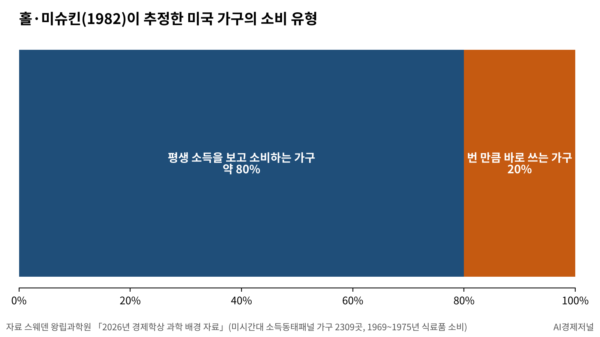

[노벨경제학상] 가계와 기업의 선택 위에 세운 경기 안정 모형
홀의 1978년 소비 검정, 가구 약 80%는 평생 소득 기준
우드퍼드의 『이자와 물가』, 금리·물가·산출 갭의 방정식 셋
세계 중앙은행 정책 모형의 토대, 상금 1200만 크로나
AI경제저널=김갑봉 기자 | 2026년 10월 12일 스웨덴 왕립과학원이 노벨경제학상 수상자를 발표했다. 로버트 홀(Robert E. Hall) 미국 스탠퍼드대 교수와 마이클 우드퍼드(Michael Woodford) 미국 컬럼비아대 교수다.
공적은 「거시경제 안정화의 미시경제학적 기초」다. 상금 1200만 크로나는 둘이 똑같이 나눈다. 홀은 1943년생, 우드퍼드는 1955년생으로 둘 다 매사추세츠공대에서 박사 학위를 받았다.
1970년대 석유 위기, 무너진 거시 모형
왕립과학원은 수상 배경을 1970년대에서 찾는다. 석유 위기 때 케인스 모형은 작동하지 않았다. 정책은 실업 대신 통제되지 않는 물가 상승을 낳았고, 안정화 정책이 득보다 실이 컸다는 평가까지 나왔다.
무너진 것은 국민소득·물가·실업 같은 거시 변수 사이의 통계 관계에 기댄 모형이다.
두 수상자는 모형을 아래에서 다시 쌓았다. 새 모형은 가계가 얼마를 쓰고 모을지, 기업이 값을 얼마에 매길지에서 출발한다.
왕립과학원은 대중 해설의 제목을 「미시적 기초가 거시적 통찰을 낳는다」로 달았다. 개별 가계와 기업이 내린 결정의 총합이 경제 전체를 움직이는 경로를 모형 안에 담았다는 설명이다.
홀의 검정, 새 소식에만 움직이는 소비
홀은 1978년 「생애주기·항상소득 가설의 확률적 함의: 이론과 증거」를 『정치경제학 저널』에 실었다. 가계가 평생 소득을 내다보고 소비를 정한다면 소비의 변화는 이미 아는 정보로 맞힐 수 없다.
그는 이론이 내놓는 이 예측을 가설로 세우고 미국의 분기별 총량 자료로 검정했다. 왕립과학원은 이 논문을 학계의 「유레카의 순간」이라 부른다.
1982년 홀은 프레더릭 미슈킨(Frederic Mishkin)과 미시간대 소득동태패널 자료로 가구 2309곳의 1969~1975년 식료품 소비를 분석했다. 약 80%가 이론대로 소비했다.
나머지 20%는 빌리거나 모을 여유 없이 번 만큼 바로 쓰는 가구다. 두 사람은 같은 소득 변화에도 가구마다 소비 반응이 다르다는 점을 보였다. 왕립과학원은 이 비율이 시기와 나라마다 다르다고 덧붙인다.

우드퍼드의 방정식 셋, 금리·물가·산출 갭
우드퍼드는 1990년대 줄리오 로템버그(Julio Rotemberg)와 함께 쓴 논문과 단독 논문들로 틀을 닦았다. 2003년 저서 『이자와 물가』에서 새케인스학파 모형을 완성했다.
왕립과학원은 이를 모든 새케인스학파 모형의 원형이라 부른다. 방정식은 셋이다. 첫째 수요식에서 소비는 기대 소득과 금리에 달린다.
수요식의 기준은 크누트 빅셀(Knut Wicksell)의 중립금리다. 소비를 부추기지도 누르지도 않는 금리를 가리킨다.
둘째 물가식은 가격 경직성을 담는다. 기업은 값을 자주 바꾸지 못해 앞으로의 비용과 경쟁사 가격을 내다보고 값을 정한다. 실제 산출과 자연 산출, 곧 가격이 자유롭게 움직일 때의 산출 사이의 차이인 산출 갭이 물가를 움직인다.
셋째는 중앙은행의 금리 결정이다. 모형은 통화량이 아니라 금리를 정책 수단으로 둔다.
금리는 준칙을 따른다. 물가가 1만큼 오르면 명목금리를 그보다 더 올린다. 존 테일러(John Taylor)의 1993년 논문에서 이름을 따 테일러 준칙이라 부른다.
세계 중앙은행의 정책 실험실
욘 하슬레르(John Hassler) 경제학상 위원장은 두 수상자의 연구가 세계 중앙은행과 정부가 쓰는 모형에 안정된 이론적 토대를 줬다고 밝혔다.
왕립과학원은 이 모형을 정책 당국자를 위한 일종의 실험실이라 부른다. 공급 충격으로 자연 산출이 줄었는데 수요가 그대로면 실제 산출이 자연 산출을 웃돈다. 이때 모형은 금리 인상 같은 냉각 조치를 권한다.
미래 정책에 대한 기대가 지금의 경제를 움직인다는 점도 모형의 축이다. 왕립과학원은 중앙은행이 판단의 근거와 앞으로의 계획을 분명하고 믿을 만하게 알리는 일이 운영의 핵심이 됐다고 밝혔다.
우드퍼드는 2005년 잭슨홀 회의 논문에서 중앙은행이 목표와 방법을 공개해야 한다고 주장했다.
왕립과학원은 이 틀이 팬데믹과 최근 에너지 위기 때 크게 쓸모 있었다고 평가했다.
왕립과학원이 밝힌 한계, 선제 안내 수수께끼
왕립과학원 과학 배경 자료는 모형의 약점도 적었다. 모형의 단순화는 편리하지만 중요한 비선형성을 놓칠 위험이 있다. 대부분의 새케인스학파 모형이 가정하는 가격·임금 경직성의 형태도 비판을 받았다.
또 하나는 「선제 안내 수수께끼」다. 마르코 델 네그로(Marco Del Negro) 등은 2023년 논문에서 단순한 모형이 먼 미래 금리 약속의 효과를 지나치게 크게 계산한다고 짚었다.
왕립과학원은 경기 침체 뒤의 비교적 빠른 회복이 더 나은 안정화 정책 덕분이라고 의심의 여지 없이 증명하기는 어렵다고 스스로 밝혔다. 다만 그 정책이 매우 중요한 몫을 했다는 데에는 합의가 있다고 덧붙였다. 두 수상자는 12월 10일 스웨덴 스톡홀름 콘서트홀 시상식에서 상을 받는다.
참고문헌
- Hall, Robert E., 「Stochastic Implications of the Life Cycle-Permanent Income Hypothesis: Theory and Evidence」, 『Journal of Political Economy』 86(6), University of Chicago Press, 1978년 12월, 971~987쪽, https://econpapers.repec.org/RePEc:ucp:jpolec:v:86:y:1978:i:6:p:971-87
- Hall, Robert E.·Mishkin, Frederic S., 「The Sensitivity of Consumption to Transitory Income: Estimates from Panel Data on Households」, 『Econometrica』 50(2), Econometric Society, 1982년 3월, 461~481쪽, https://ideas.repec.org/a/ecm/emetrp/v50y1982i2p461-81.html
- Rotemberg, Julio J.·Woodford, Michael, 「An Optimization-Based Econometric Framework for the Evaluation of Monetary Policy」, 『NBER Macroeconomics Annual』 12, MIT Press, 1997년, 297~346쪽, https://www.nber.org/books-and-chapters/nber-macroeconomics-annual-1997-volume-12/optimization-based-econometric-framework-evaluation-monetary-policy
- Woodford, Michael, 『Interest and Prices: Foundations of a Theory of Monetary Policy』, Princeton University Press, 2003년
- Woodford, Michael, 「Central Bank Communication and Policy Effectiveness」, 『The Greenspan Era: Lessons for the Future』, 미국 캔자스시티 연방준비은행, 2005년 8월, 399~474쪽, https://econpapers.repec.org/RePEc:fip:fedkpr:y:2005:i:aug:p:399-474
- Taylor, John B., 「Discretion versus Policy Rules in Practice」, 『Carnegie-Rochester Conference Series on Public Policy』 39, 1993년, 195~214쪽
- Del Negro, Marco·Giannoni, Marc P.·Patterson, Christina, 「The Forward Guidance Puzzle」, 『Journal of Political Economy Macroeconomics』 1(1), University of Chicago Press, 2023년, 43~79쪽
- 스웨덴 왕립과학원, 「Scientific Background to the Sveriges Riksbank Prize in Economic Sciences in Memory of Alfred Nobel 2026」, 2026년 10월, https://www.kva.se/app/uploads/2026/10/prize-economic-sciences-2026-scientific-background-2.pdf
- 스웨덴 왕립과학원, 「The Prize in Economic Sciences 2026」 보도자료, 2026년 10월 12일, https://www.kva.se/en/news/the-prize-in-economic-sciences-2026/
- 스웨덴 왕립과학원, 「Microfoundations deliver macro insights」 대중 해설, 2026년 10월, https://www.kva.se/en/prizes/prize-in-economic-sciences/microfoundations-deliver-macro-insights/
- 노벨재단, 「Nobel Prize award ceremony 2026」, https://www.nobelprize.org/ceremonies/nobel-prize-award-ceremony-2026/
[사진 출처]
- [사진 1] 미국 연방준비제도 이사회, 「CP FOMC Group 7.5x10 11142022 DSCF5769」, 2022년 12월 13일 촬영, 미국 연방정부 저작물(퍼블릭 도메인), https://commons.wikimedia.org/wiki/File:CP_FOMC_Group_7.5x10_11142022_DSCF5769_(52563724010).jpg
- [사진 2] 워런 K. 레플러(Warren K. Leffler), 「Line at a gas station, June 15, 1979」, 미국 의회도서관 인쇄·사진부(디지털 번호 ppmsca.03433), 퍼블릭 도메인, https://commons.wikimedia.org/wiki/File:Line_at_a_gas_station,_June_15,_1979.jpg
※ 이 기사는 AI 프로그램 클로드를 활용해 작성했습니다.
관련기사
저작권자 © AI경제저널 무단전재 및 재배포, AI학습 및 활용 금지